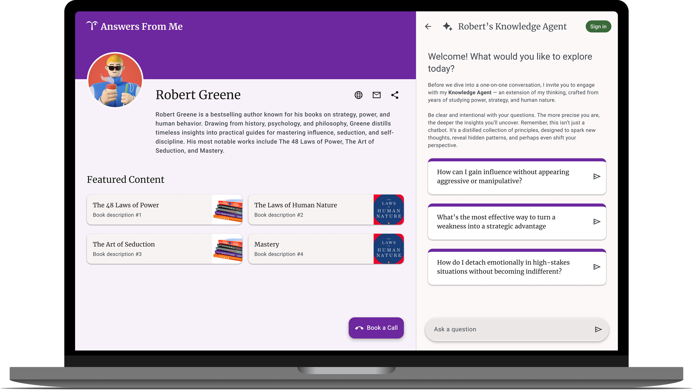
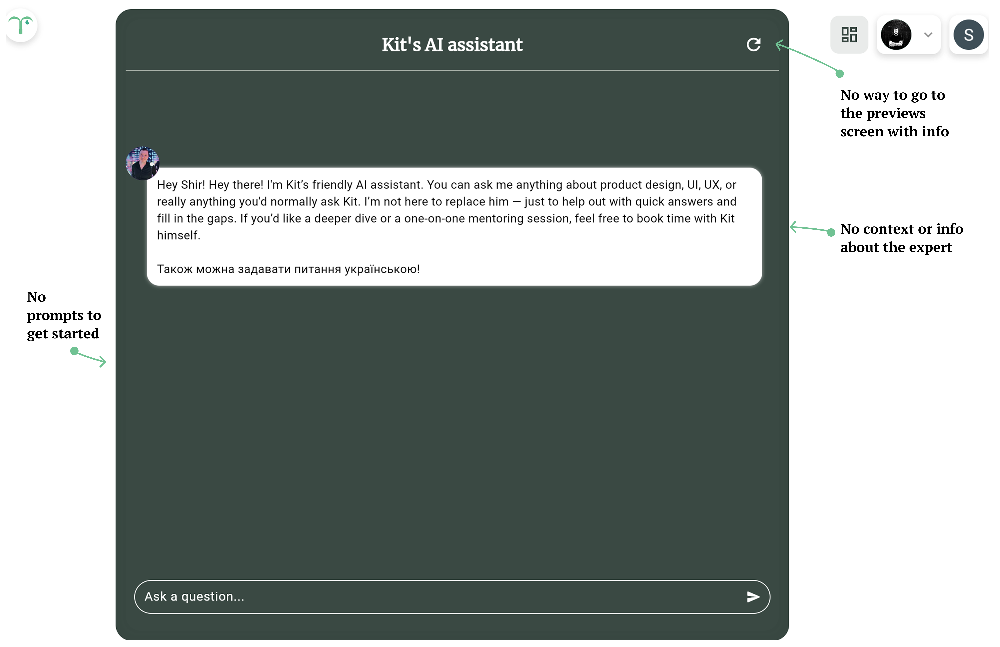
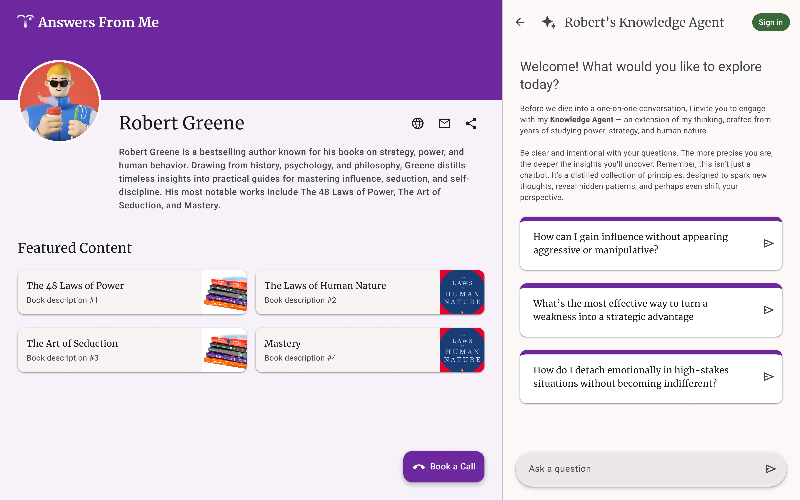
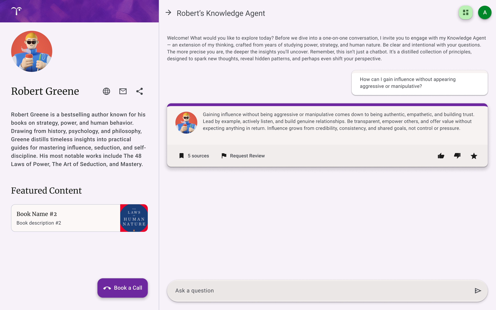
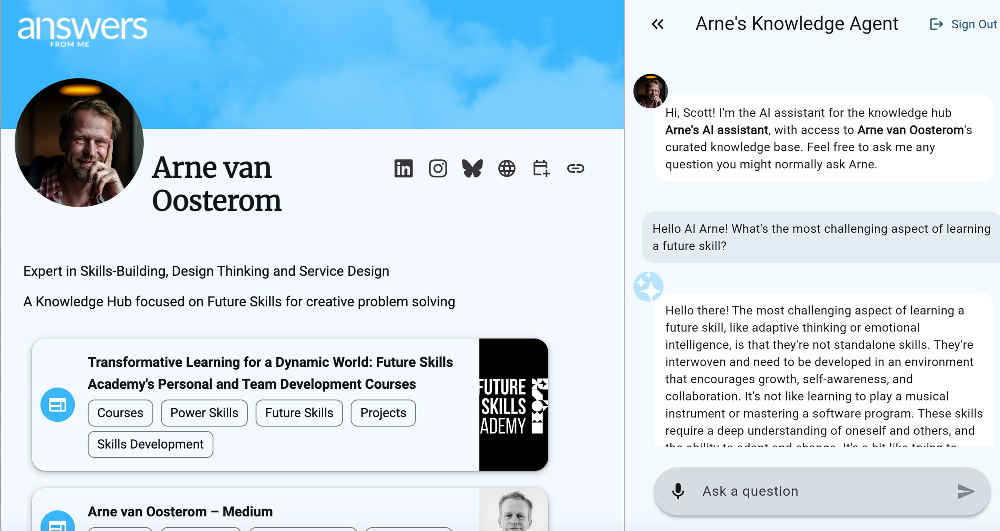

✕
Redesigning the onboarding and chat experience for knowledge seekers on an AI-powered expert platform.

AnswersFromMe (by tmpt.me) lets experts turn their content into a controlled, personalized AI assistant trained on their knowledge.
I was responsible for redesigning the onboarding experience for seekers, users looking for expert insights. During the process, I identified a key issue in the chat interaction: low engagement caused by a lack of context, as chats with the AI expert occurred in isolation.
Knowledge seekers lack context and clear navigation on the chat screen, leaving them stuck and disengaged, which reduces trust and interaction with the platform.

Before: original expert page
After speaking with seekers and experts using the platform, I found key issues that needed to be addressed.
From isolated AI chats to a credible expert homepage: context first.
The new expert page helps seekers quickly understand who an expert is and why they're credible, building trust from the start.

Redesigned expert page

After clicking on one of the prompts in the chat (the context stays)

After implementation
I learned that in AI-driven interactions, providing immediate context and visual credibility is essential for transforming user uncertainty into trust and active engagement.